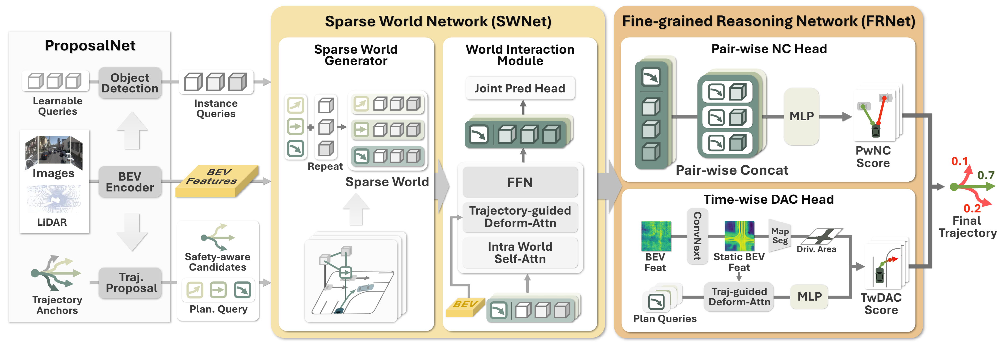
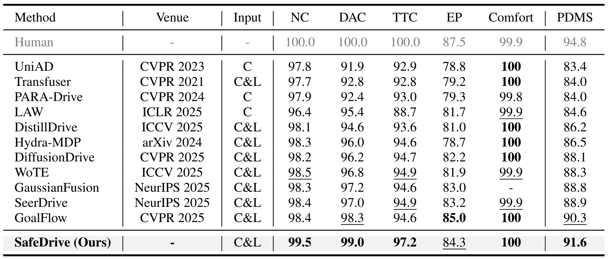
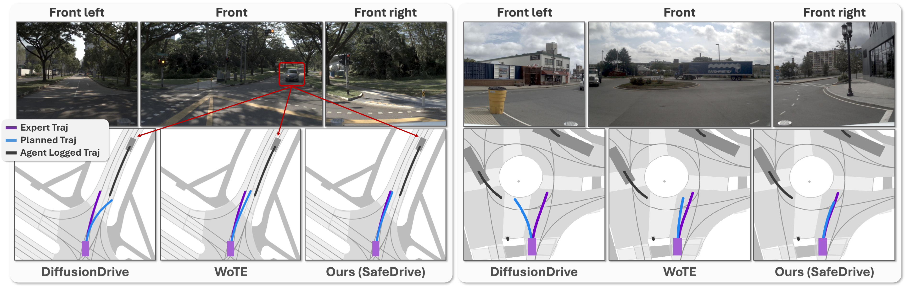
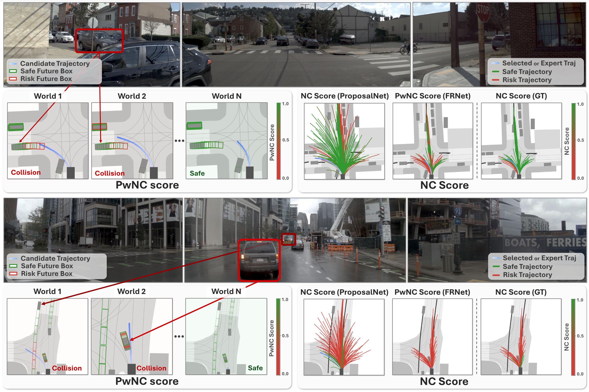
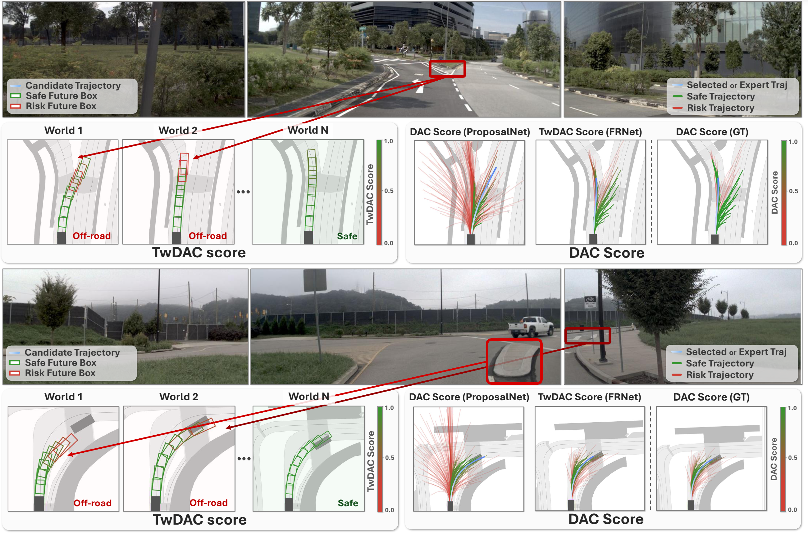

Overall architecture of SafeDrive. ProposalNet evaluates the scene-level safety of anchor trajectories using BEV features and selects safety-aware candidates. SWNet constructs trajectory-conditioned Sparse Worlds by simulating the future behaviors of dynamic agents and road entities. FRNet performs fine-grained safety reasoning by estimating pair-wise No at-fault Collision score and evaluating Time-wise Drivable Area Compliance score over time, enabling interpretable and temporally grounded safety assessment.


Pair-wise Collision Check

Time-wise Drivable Area Compliance Check

@inproceedings{safedrive,
title={SafeDrive: Fine-Grained Safety Reasoning for End-to-End Driving in a Sparse World},
author={Kim, Jungho and Oh, Jiyong and Yu, Seunghoon and Shin, Hongjae and Kwak, Donghyuk and Choi, Jun Won},
booktitle={Proceedings of the IEEE/CVF Conference on Computer Vision and Pattern Recognition},
year={2026}
}